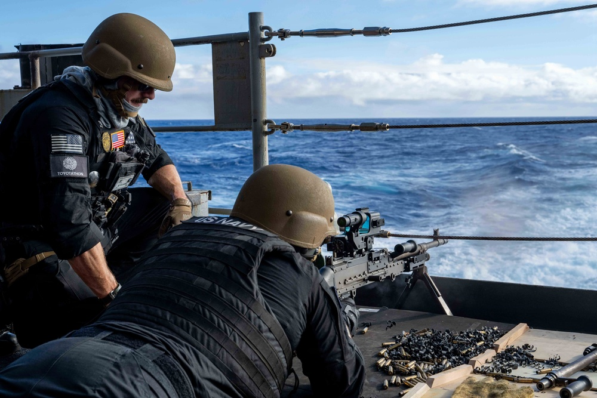

Mass Communication Specialist Seaman Kellie Given · DVIDS 10006894 · Public domain · Master-at-Arms 2nd Class Taylor Bendig and Master-at-Arms Seaman Torres Contreras fire an M240B from the fantail of USS Theodore Roosevelt during a live-fire exercise. Photo taken Oct. 11, 2026.
DVIDS
Theodore Roosevelt's masters-at-arms fired the fantail guns while underway in the 7th Fleet
DVIDS posted this morning a live-fire aboard USS Theodore Roosevelt on Oct. 11. Master-at-Arms 2nd Class Taylor Bendig and Master-at-Arms Seaman Torres Contreras fired an M240B machine gun from the fantail, and a second frame shows Master-at-Arms 1st Class Jean Loquias reloading a .50-caliber. The caption says Roosevelt, flagship of Carrier Strike Group 9, is underway on routine operations in the U.S. 7th Fleet area. The release is a photo caption, not an operations order, so it does not say where in the 7th Fleet the ship is steaming.
DVIDS · Read source →